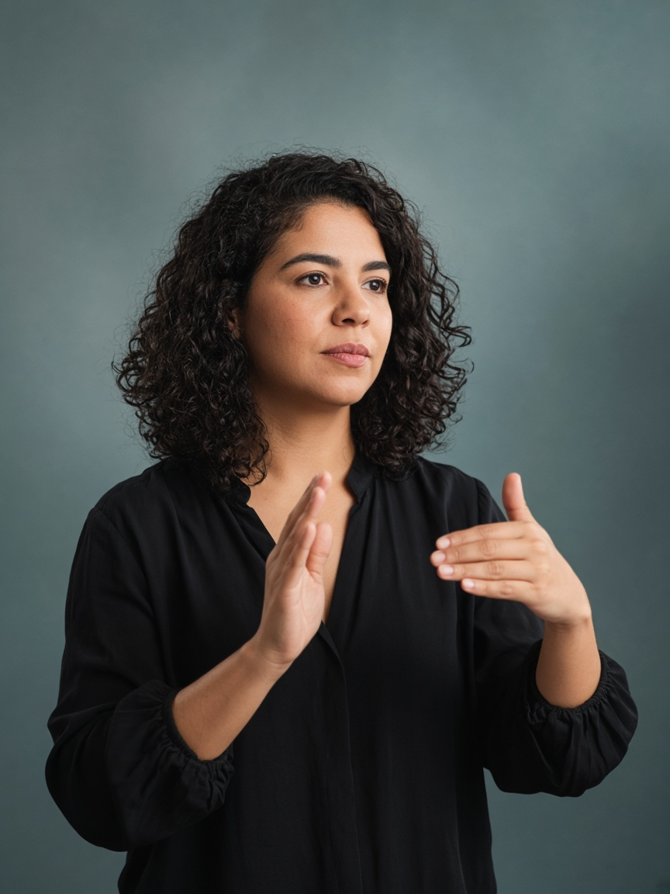
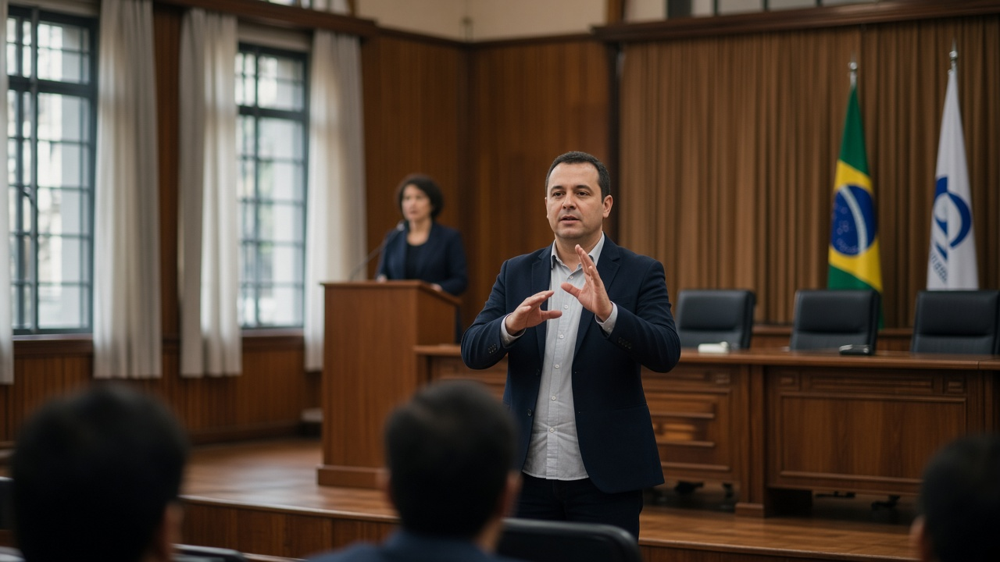
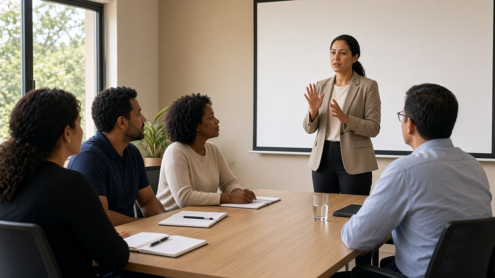

Interpretação presencial
Plenárias, aulas, palestras, audiências, congressos e treinamentos, com preparação prévia do conteúdo.
Inclusiva — Processos e Treinamentos
A Inclusiva organiza interpretação presencial e remota, janela de Libras e preparação de conteúdo. O serviço atende universidades, câmaras, prefeituras, entidades de classe e empresas em todo o Brasil.
Os registros visuais da atuação ficam no Instagram @inclusiva_treinamento.

Instituições que já contrataram o serviço
Plenário, transmissão remota e sala de treinamento pedem preparos diferentes. As fotos abaixo ilustram esses contextos de trabalho.


Fotografias ilustrativas da atuação em interpretação de Português para Libras. Não retratam a equipe da Inclusiva.
Da demanda pontual ao trabalho recorrente, cada formato é dimensionado pelo tema, pelo público e pelo prazo.
Plenárias, aulas, palestras, audiências, congressos e treinamentos, com preparação prévia do conteúdo.
Lives, webinars e reuniões online, em estúdio ou ponto de transmissão, com teste de conexão antes do evento.
Janela de Libras para vídeos institucionais, videoaulas, campanhas e conteúdos que permanecem disponíveis.
Câmaras, prefeituras, tribunais e OAB: sessões, eventos e comunicação institucional acessível.
Universidades, congressos, lives acadêmicas e ações de inclusão no ensino superior.
Orientação para organizar a comunicação em Libras: formato, materiais, prazos e revezamento quando a duração exigir.
Interpretação e tradução não se contratam do mesmo jeito. Separar os formatos evita escopo incompleto e entrega fora do que o público surdo precisa.
Ao vivo
Acontece em tempo real, da fala para a Libras, no presencial ou no remoto. O briefing reúne tema, roteiro, nomes e a dinâmica do evento. Em atividades longas, o revezamento protege a qualidade do sinal.
Gravado
Trabalha com vídeo, áudio ou texto já produzido. Há tempo de pesquisa, gravação da janela de Libras e revisão antes da entrega. O material pode sair editado ou em versão para inserção.
Um pedido claro no início deixa equipe, preparo e entrega previsíveis.
Data, duração, tema, público, plataforma e o que já existe de roteiro ou apresentação.
Leitura do material, terminologia e alinhamento do formato: presencial, remoto ou estúdio.
Interpretação ao vivo ou gravação da janela de Libras, com revezamento quando o tempo pedir.
O evento acessível no dia combinado ou o vídeo com a janela pronta para publicar.
Os títulos abaixo identificam a formação que ampara o serviço. A responsável técnica é Noemi Provvidenti.
Exame Nacional de Certificação em Libras, MEC/INEP-UFSC. Proficiência em tradução e interpretação da Língua Brasileira de Sinais.
Tradutor e Intérprete de Libras — Faculdade Metropolitana. Formação acadêmica somada à prática contínua desde 1995.
Começo do trabalho de tradução e interpretação em Libras.
Interpretação para pessoa com deficiência visual e auditiva.
Habilitação de proficiência em tradução e interpretação de Libras.
Universidades, câmaras, prefeituras, OAB, tribunais, feiras e iniciativa privada.
Tradutor e Intérprete de Libras — Faculdade Metropolitana.
Para consultar imagens e registros do trabalho, use o Instagram @inclusiva_treinamento.
O serviço de interpretação em Libras já foi prestado a instituições públicas, entidades de classe e empresas. Entre elas:
Universidade Federal de Itajubá: interpretação em contextos acadêmicos e institucionais.
Acessibilidade em Libras para sessões, eventos e comunicação institucional.
Interpretação em plenárias e atividades da Casa Legislativa.
Eventos e comunicação da gestão municipal com acessibilidade em Libras.
Interpretação para ações institucionais e eventos da prefeitura.
Acessibilidade comunicacional em eventos e atividades da Ordem.
Empresas e produtoras: eventos internos, treinamentos, lives e campanhas com Libras.
Interpretação em ambiente jurídico e institucional.
Eventos e comunicação institucional acessível.
Treinamentos, palestras e capacitações.
Eventos corporativos e programas de inclusão.
Interpretação em evento sobre tecnologia e educação.
Vivência SESC com Flávia Mariano e Renato Frosch — 30 anos do Clube do Pedal.
Estratégia Pessoal — Conectando e Raízes com Elas.
Arte com acessibilidade em Libras.
Feira internacional do setor gráfico.
Tradução e interpretação bilíngue para conteúdos internacionais.
Informe o formato, a data e o tema. O retorno cobre eventos, plenárias, aulas, lives e vídeos, com atendimento em todo o Brasil.
Telefone / WhatsApp: +55 11 97963-1676
E-mail: librasinclus@gmail.com
LinkedIn da responsável técnica: noemi-provvidenti